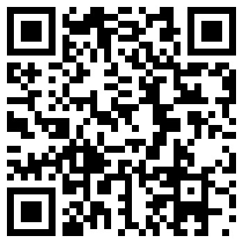
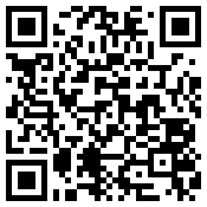
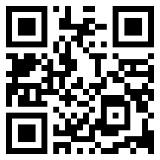

Informatikai tanulmányaim alatt már találkoztam a HTML és CSS világával, azonban még senki nem tudta úgy elmagyarázni hogy értsem is. Ez idén megváltozott, rengeteget tanultam, megértettem hogy hogy működik, és mára már az egyik kedvenc tantárgyam. Most megpróbálom időrendbe felrakni, miket is csináltam eddig.
Persze ahhoz hogy így menjen, néha nem ártott egy kis gyakorlás sem
És mégtöbb tanulás
Reszponzivitás
Természetesen egy idő után meg kellet tanulni, hogyan kell telefonról is könnyen elérhető, reszponzív weboldalakat készíteni. Ugyan nem ez volt az első reszponzív weboldalam, de erre vagyok a legbüszkébb. Pár kedvencemet be is linkelem QR kód formájában.
  